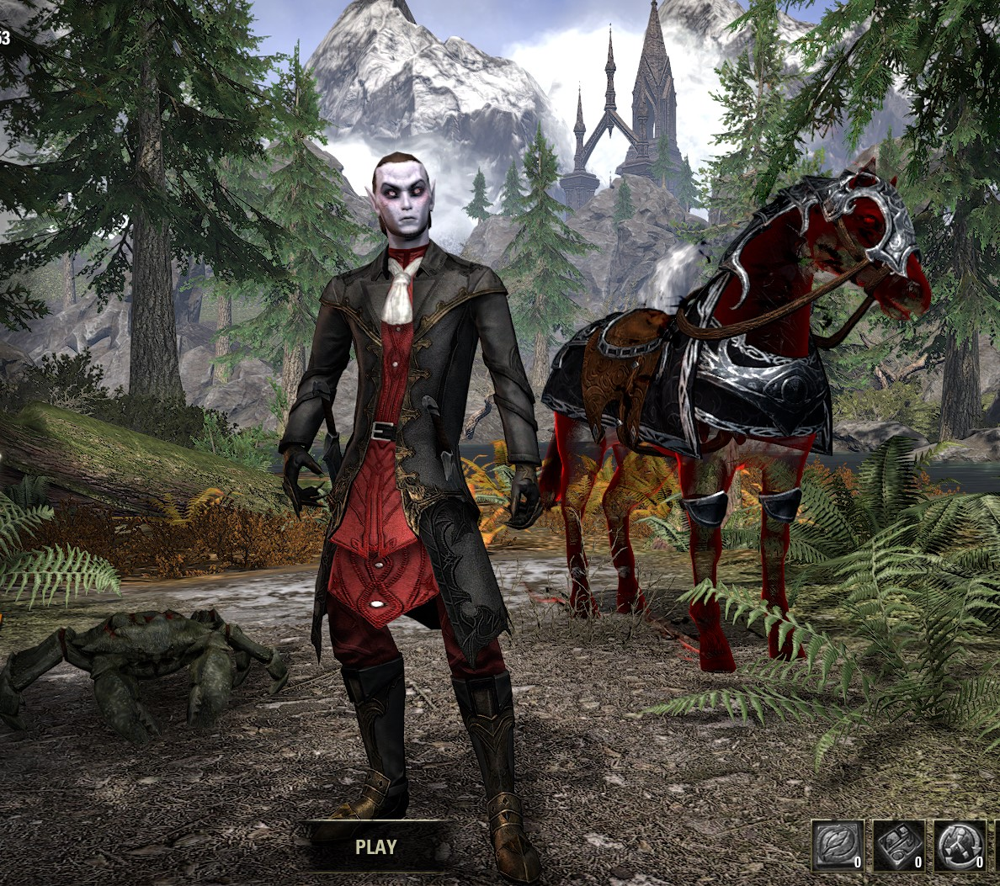
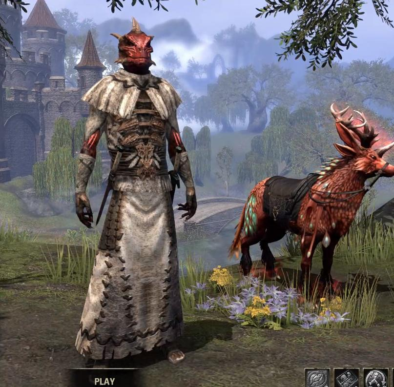

Quentavar
Quentavar is my Sorcerer DPS. He wears mothers sorrow, and false gods with the maw of the infernal helmet/shoulders. He currently does about 65k dps, and he is my main. He has all his crafting skills maxed, and he only needs to unlock a bunch of styles to become a grand master crafter.

Roggvir the Mighty
Roggvir is my tank. He is currently level 50 and I do many dungeons on him since tanks queue very quickly. I am finding out that I actually like tanking, but I don't know if I prefer it over DPS. I tried tanking nMOL and I was pretty bad but I intend to try more in the future.
He is currently using a dwarven inferno spider, and he rides the whispering claw senche raht. He also wears a costume but I forget which one it is. I just know that you get if for free in the CP levels.

Admiral Rubbish
Admiral rubbish is a Vampire Nightblade Assassin. He is currently level 50. He is an avid member of the thieves guild, and the dark brotherhood. I use him to gather mats since he is very fast due to his gear, and ability set. (Due to U27, he lost rapid manouver but I recently regained it.) He can also make gold fairly quickly if I were to sell all of the mats that I have gathered.
He wears the Vampire Noble Costume and uses the Wraithshadow steed, with the mudcrab of eternal doom. He is also a stage 4 vampire.
Hits-Head-on-Cabinet
This is my werewolf stamblade. He is level 50.
He currently wears the red skin and wears the ashlander costume.
Quaranar (Frosty Witch Farmer)
This is my ice magden and he is a breton. I really like him for solo content and for completing some of the endeavours that are to use x number of class/weopon abilities since he has a good variety of AOEs that can be used a lot in public dungeons. For some reason, my sister calls him a "Frosty Witch Farmer" though..
 \
\
J'darr Zaada-Ri
J'darr Zaada-ri is my khajit stamina templar. I mostly made him becuase I want more characters so I can make more gold, but I also find him fun to plan. He is currently level 26.
He wears Apostle medium legs and shirt, ebonshadow medium the rest, and morag tong swords. All of them are dyed noxophilic black and sigil orange. Picture can be found here. He uses the whispering claw senche raht friend his mount... oops I... uhhh... I meant... as his friend since senche rahts are not even 1% mount, they are all friends (this is a joke I have with my brother)
{kind=link}
Nerandil Leranthar
Nerandil Leranthar is my sorcerer tank in the works. He is not very high level (21) but I am slowly working on him. I want to level him mostly for the writs and the gold that they give.
He is wearing all welkynar heavy armour iirc and It is dyed dwarven brass.
Capt. Rubbish (Now deleted)
Capt. Rubbish is my other nightblade. He was kind of a test nightblade and got to level 19 before I changed to Admiral Rubbish... He is deleted, but I will keep him here

Captain Rubbish
Captain Rubbish is my very first character. He is a level 11 templar and I only sometimes use him for writs (740G per day...) EDIT: I never use him anymore and are thinking of deleting him. I will only keep the image here since I think he looks very cool (and want to preserve this style for a future templar since I think it looks very cool.)

New Characters
I want to make new characters but I need help trying to come up with names/classes/races/looks/backgrounds.
If you have any ideas, please contact me or fill out the form.
If someone comes up with a suggestion that I like, I will feature their name, and a link to one of their platforms (of their choice) on my website.